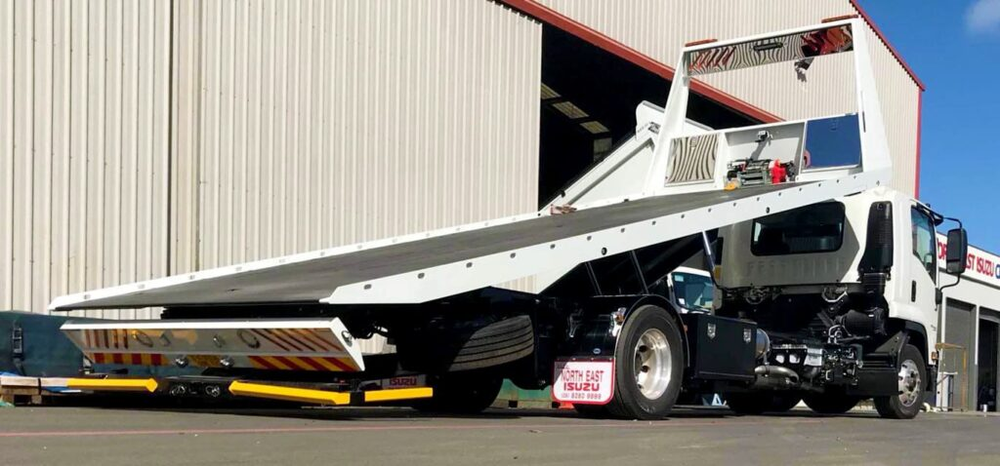

What are tilt trays ?
 What are tilt trays?
A simple and direct answer: a tilt tray is a truck with a flatbed that tilts. People often see them on the road carrying heavy cargo. This truck usually carries cars, equipment, or other large machines. They are the go-to vehicles for businesses that transport industrial machinery.
Many businesses use tilt tray trucks in Bunbury because renting one is more affordable. Other means of transportation will cost them a lot more with more risks. Another advantage is that one can load many large loads in one go. Smaller and lesser equipped vehicles cannot offer this feature.
Others use tilt tray trucks to move damaged vehicles. If a car has already lost some of its parts, it will be impossible to remove them from roads. But with a truck like this, there would be no problem.
In a sense, tilt tray trucks make our roads safer. They have the expertise and they help others who need their guidance. If companies move large cargo on their own, without proper training, it will be dangerous.
Owners of expensive vehicles also prefer tilt trays. They are more confident that there will be lesser chances of damage in these kinds of trucks. The mileage will also not be used up if they use tilt tray trucks.
The basics
People use these vehicles because of a special feature. The tray of the truck tilts back until it has direct contact with the ground. This allows heavy cargo to be loaded without the need for other equipment like cranes or booms. What the truck uses is a hydraulic mechanism that facilitates all the necessary movements. A winch is also located at the front of the tray. It draws the cargo onto the tray before the hydraulics underneath restores the tray to its horizontal position on the vehicle. Loading large objects like farm and building equipment is easy and convenient.
The mechanics
Due to some specialized features, this is unlike normal trucks. Thus, drivers must undergo formal training so they can be familiar with operating these cargo vehicles. If a driver is already a trained professional, clients can be more confident that their machines and goods will be in safe hands.
Machinery:
Do you have construction and mining equipment that is too big or bulky? Use tilt tray trucks. Heavy machinery that can’t be securely hoisted into a regular vehicle may be loaded quickly and easily onto a tilt tray truck.One just needs to make sure that there is an appropriate room in front of the equipment. Tilt tray trucks will be the safest and most cost-effective mode of transportation for these types of cargo.
Containers:
Not every business owner has a large crane. But does this mean that they can no longer transport shipping containers? Not necessarily. Tilt tray trucks make it easy and convenient for people to load intermodal containers onto flatbed trucks. After loading these cargoes, you may now bring them anywhere you wish. The kind of service these trucks provide help with the economy. They use drivers. They also help other businesses thrive. Tilt tray trucks take care of the transport side of the entrepreneurs’ trade. When these companies thrive, they will also be able to use their workers as a result.
Reach to Us
-
72 Victoria St Cabramatta NSW
2164 Australia. - 02 9050 1112
- 02 9570 3025
- info@stwinsspares.com
Connect with Us
- Google plus
- Youtube